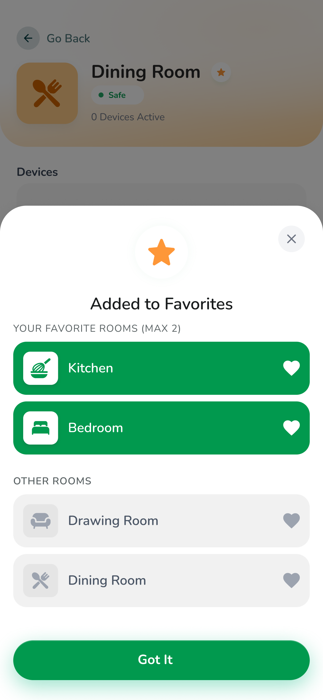

A house full of sensors,
read as one calm feed.
SAFE watches for gas leaks, fire, heat, bad air and camera events across every room — then stays quiet until something actually matters. When it does, it escalates on its own and puts help one tap away.
.png)
.png)
Safety gear that only speaks in a crisis
Households were already buying gas detectors, smoke alarms and IP cameras — but each one lived in its own app, or in no app at all. A beeping box in the kitchen tells you something is wrong; it doesn't tell your family, and it doesn't tell you which room, how bad, or what to do next.
The brief was to design a single iOS app that sits on top of all of it: every sensor in every room, one status, one place. It had to be calm enough to open daily without anxiety, and loud enough that a real gas leak reaches a sleeping family and their emergency contacts within seconds.
The hard part isn't the alarm. It's everything the app does during the hours nothing is wrong.
Four moments where the old kit goes quiet.
-
02:11
Three apps, three verdicts
The gas detector, the camera and the smart plug each ship their own app — or no app at all, just a buzzer on the wall. None of them check what the others are seeing.
Fragmented devices -
02:14
Silent, then deafening
A detector has two states: nothing, or a scream. There's no "worth a glance" in between — and a scream from two rooms away just sounds like the fridge, so it gets tuned out.
All-or-nothing alerts -
02:20
The alert has nowhere to go
The phone is face-down on mute. No automatic SMS to the room upstairs, no call, no fire-service fallback. If this one phone misses it, the chain ends here.
Nobody else finds out -
02:26
“Which room? How bad?”
Someone finally wakes to the noise. The box won't say where the gas is, how close to dangerous it's drifting, or whether to crack a window or get everyone out.
No context, no next step
Four rules the whole app bends to
These sat above the feature list. When a screen felt wrong, it was usually breaking one of them.
Quiet by default
A safe home is a boring screen — one green line, no red, no badges. Colour and motion are rationed so that when they appear, they mean something.
One glance, one truth
The top of every screen answers "are we OK?" before anything else loads. Room cards, sensor tiles and the nav bar all repeat that same status word.
Escalate without me
The app assumes the user is asleep, driving, or panicking. Contacts, SMS and the fire service fire on a timer, not on a tap.
Readable under stress
Big targets, plain verbs — "Shut off gas supply", "I'm in Danger" — Bangla first-class, and an Elder Mode that strips the UI down further.
Colour is the interface
Everything in SAFE resolves to one of three states. The palette isn't decoration — it's the fastest way to move a status from the sensor to a half-asleep human brain. Green means don't think about it. Amber means look when you can. Red means move now.
Every component — the home banner, room cards, sensor tiles, the alerts list, even the bottom tab bar — inherits the same three colours and the same three words, so the language never has to be re-learned.
Safe
All readings inside their thresholds. The home banner shows a shield, the feed is a single calm line, and nothing competes for attention.
Warning
A reading is drifting, a device is offline, or a child is near a danger zone. Worth a glance — the room card flips to amber, the family is notified, but no siren.
Emergency
A threshold is crossed — gas, fire or heat. Full-screen red takeover, local siren, automatic SMS and calls, and a single "I'm in Danger" button.
Normal gas level is 0–50 PPM. The user sets the alert threshold themselves; cross it and SAFE sends an immediate emergency alert.
.png)
From an empty house to a guarded one
Six flows carry the whole app. Drag each filmstrip sideways, or tap any screen to open it full size.
Onboarding & setting up the home
A bilingual walkthrough sells the "why" in four beats, then the shortest possible path to a working home — phone OTP, a home name and type, and the first rooms. Nothing about IP addresses or MQTT topics until the user chooses to add a device.
.png)
.png)
.png)
.png)
.png)
.png)
.png)
.png)
.png)
The calm dashboard — and its opposite
Same layout, different temperature
The safe and alert dashboards are structurally identical — greeting, status banner, quick actions, room grid. Only the banner, the Emergency tile and the tab-bar badge change. Nothing jumps around, so a stressed user's muscle memory still works.
- Status banner carries the single source of truth: shield + "12 Devices · All Sensors Active".
- Quick Actions surface the four things people reach for: Emergency, Camera, the risky room, Environment.
- Room cards are tinted by type and stamped with their own Safe / Warning chip and device count.
- In alert state the Emergency tile goes solid red and the Warning tab shows a count.
Rooms as "guardians"
Each room rolls its sensors into one status and a friendly name — "Kitchen Guardian". A room aggregates gas, heat, fire and camera into three headline readings, lists each device with a health bar, and folds multiple rooms of one type ("Bedroom 1", "Bedroom 2") under a single card.
.png)
.png)
.png)
.png)
.png)
.png)
.png)
One sensor template, five personalities
Gas, fire, temperature, air-quality and camera detail screens all share a skeleton: a tinted hero with the live reading, a 2×2 status grid (room, battery, reading, connection), recent alerts, then management actions. Each type recolours the hero and swaps in its own threshold control — a PPM slider for gas, a °C slider for heat, a simple on/off for fire.
.png)
.png)
.png)
.png)
.png)
.png)
Environment monitor
The "everything's fine, here's why" screen
Air-quality index, smoke, temperature, humidity and light on one board, each with a plain verdict — "Good", "Comfortable", "Normal". Two trend charts show the day's shape, and a by-room list flags the one space that's drifting (Kitchen: Moderate) without alarm.
- Hero AQI card in soft green — informative, not a warning.
- Metric tiles pair a big number with a one-word state, colour-matched.
- Line charts stay minimal: one series, labelled hours, a caption that interprets the trend.
.png)
Live cameras
A dark, deliberately different corner of the app — camera feeds want contrast, not calm pastels. A grid of live tiles with status and channel number, a full stream view with a timestamped feed and recent snapshots, and management tucked at the bottom.
.png)
.png)
.png)
Three tiers, and a chain that runs itself
The Alerts screen groups events into Emergency, Warning and Safe — each with a count, a colour and a left border. An emergency card shows the device, the room, the reading and the action already taken ("Shut off gas supply"), then offers Resolve or Details.
Tap Details and a sheet lays out the level (55 PPM), the timeline, and a short list of physical instructions — open the windows, check the stove, wait and re-check. The app never assumes the user knows what to do.
.png)
Move now
Full-screen red. A local siren fires, the family and emergency contacts are messaged automatically, and the "I'm in Danger" button escalates straight to the fire service. The detail sheet still finds room for calm, numbered instructions — because that's exactly when people forget them.
.png)
Look when you can
A child near a danger zone, poor air quality, a weak sensor connection. Amber left border, family notified, a resolution line ("Family has been notified") — but no siren and no takeover. It sits in the list until acknowledged.
.png)
Proof of life
"All Systems Normal · Entire Home · 1 hour ago". Safe events are logged too, so the absence of a problem is visible — a quiet reassurance that the system is actually watching, plus a Tips card pointing back to the emergency button.
Configured once in Settings → Emergency Contacts, then it runs on a timer with no taps required. Contacts are drag-ordered by priority; each has its own SMS and call cadence.
Gas passes the user's PPM limit. Full-screen alert + local siren on the device.
Dad and Mom get an SMS the moment the issue occurs — room, hazard and level.
Priority 1 is called every 5 minutes, priority 2 every 10 — until someone answers.
If nobody has answered in 5 minutes, SAFE moves down the priority list automatically.
Still unresolved after 10 minutes — the app contacts emergency services with the address.
.png)
.png)
.png)
Small decisions, repeated everywhere
.png)
Accessibility isn't a toggle at the bottom
Large Text and Elder Mode live in their own Accessibility group, and Elder Mode isn't just bigger type — it's a genuinely reduced UI. Language sits up top; the whole app ships Bangla-first.
.png)
Teach where the task is
Guided tutorials and the Help Center are one tap from Settings, each chunked into short steps with a time estimate — and "Emergency Protocol" is its own SOS-marked lesson.

Constraints as kindness
"Favourite rooms (max 2)" is a hard cap on purpose — the point is a shortcut to the spaces that matter, not another list to manage.
.png)
Bottom sheets over new screens
Add device, add contact, help, rename, favourites — anything modal is a sheet over a blurred context, so the user never loses their place in the home.
The full set
Thirty-two screens across onboarding, home, rooms, sensors, cameras, alerts and settings. Click any to open it.
.png)
.png)
A system, not a screen pile
SAFE shipped as one coherent iOS product: a reusable device model, a three-state design language, and an escalation engine that works whether or not anyone is looking at the phone.
- One mental model. Safe / Warning / Emergency is learned once and reused on every surface — banner, room, sensor, tab bar, alert.
- Setup without jargon. A household gets to a working, guarded home before ever seeing an IP address or a sensor topic.
- Help that doesn't depend on you. Timed SMS, calls and a fire-service fallback mean a missed notification isn't a dead end.
- Built for the whole family. Bangla-first, Elder Mode, large targets, plain verbs — usable by the person most likely to be home alone.
Next iteration: an on-device history view so households can see how their air and heat trend over weeks, and a shared "who's home / who's been notified" state so the escalation chain is visible to the whole family in real time — not just to whoever set it up.
Want the full walkthrough?
Happy to screen-share the prototype and the design-system file, or talk through the escalation logic on a call.